몰입을 돕는 도구와 서비스를 찾아가는
Tiny의 작은 연구소입니다.
A tiny lab by Tiny, exploring tools and
services that help you find your flow.
흐름들이 모여 만들어낸 결과물들입니다.
Where converging flows become tangible results.
개인 지식 아카이브와 인사이트 발행을 자동화하는 AI 통합 파이프라인 시스템. 다양한 소스에서 정보를 수집·분석·구조화하여 Flowlab 커뮤니티로 발행하는 흐름을 하나로 연결한다.
An integrated AI pipeline system automating personal knowledge archiving and insight publishing. Connects collection, analysis, and distribution into a single continuous flow toward the Flowlab community.
자연어 캠페인 브리프를 에디토리얼 컨셉·스토리보드·샷 플랜·비주얼 컨셉으로 바꾸는 LLM 네이티브 광고 제작 도구. 샷 전반에서 인물·제품 일관성을 유지하고 샷마다 적합한 이미지 모델로 라우팅한다.
LLM-native advertising production tool that turns natural-language campaign briefs into editorial concepts, storyboards, shot plans & visual concepts — keeping identity and product consistency across shots and routing each shot to a suitable image model.
다양한 소스에서 인사이트를 추출하고 Flowlab에 자동 발행하는 AI 파이프라인
AI pipeline that extracts insights from multiple sources and auto-publishes to Flowlab
AI 커뮤니티 플랫폼 — 게시판·댓글·RSVP·큐레이션 풀스택 앱
AI community platform — boards, comments, RSVP & curation full-stack app
tiny_brain 전체 파이프라인 상태 시각화 모니터링 대시보드
Monitoring dashboard for the tiny_brain pipeline architecture
메신저 봇 미들웨어 서버 — 메시지 수신·자동응답·관리자 WebUI
Messenger bot middleware — message handling, auto-reply & admin WebUI
Antigravity CLI용 3줄 터미널 상태바 — 사용량·비용·서브에이전트·컨텍스트 실시간 표시
3-line terminal status bar for Antigravity CLI — live usage, cost, subagent & context tracking
WSL2 환경에서의 AI 개발 환경 구축 가이드
AI dev environment setup guide on WSL2
GitHub Copilot CLI 기반 AI 멀티에이전트 소설 창작 시스템
AI multi-agent novel creation system for GitHub Copilot CLI
새로운 흐름을 함께 만들고 싶다면 연락주세요.
Want to create new flows together? Let's connect.